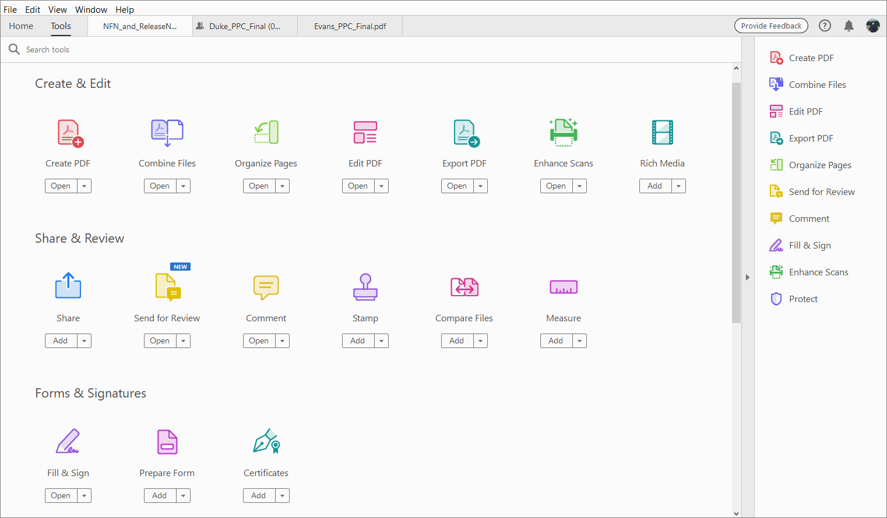
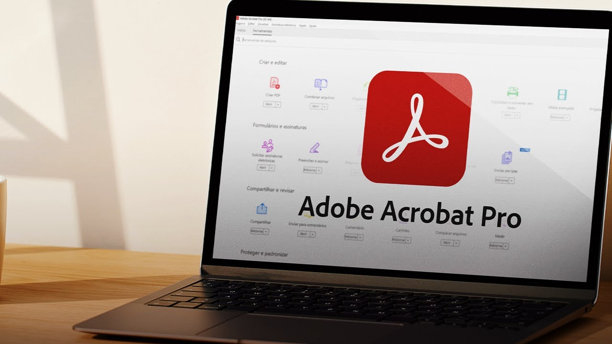
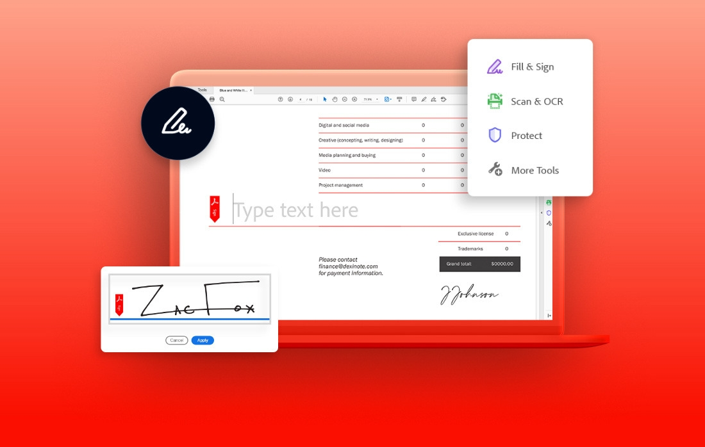
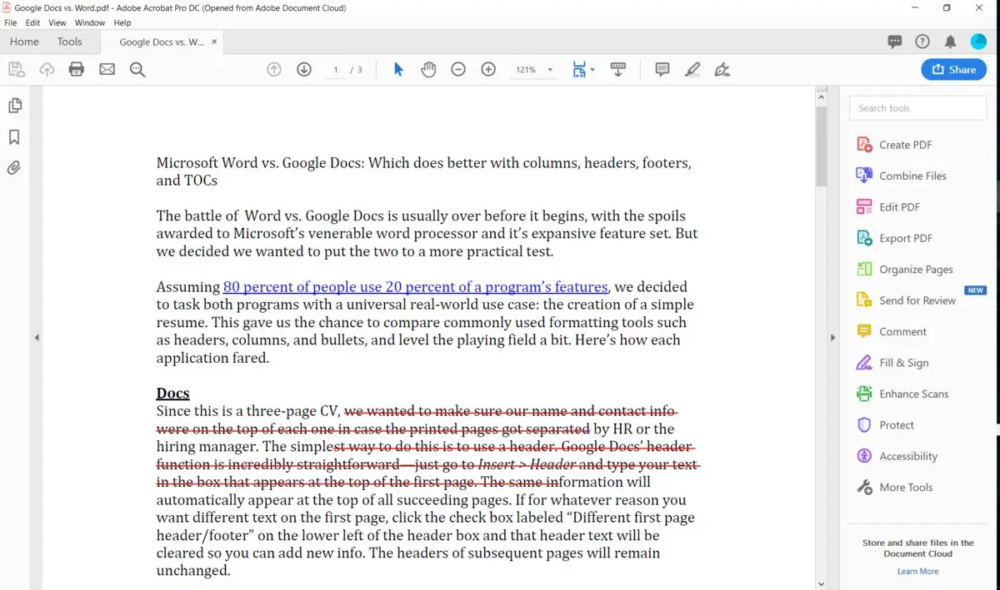
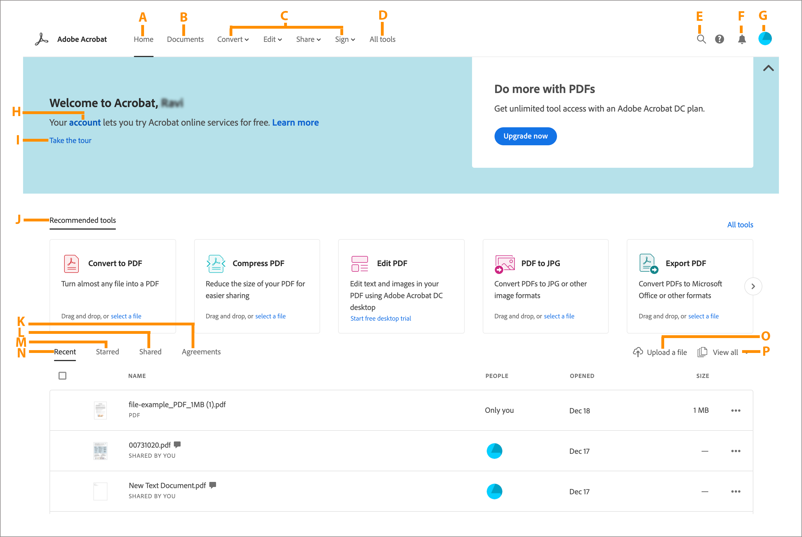
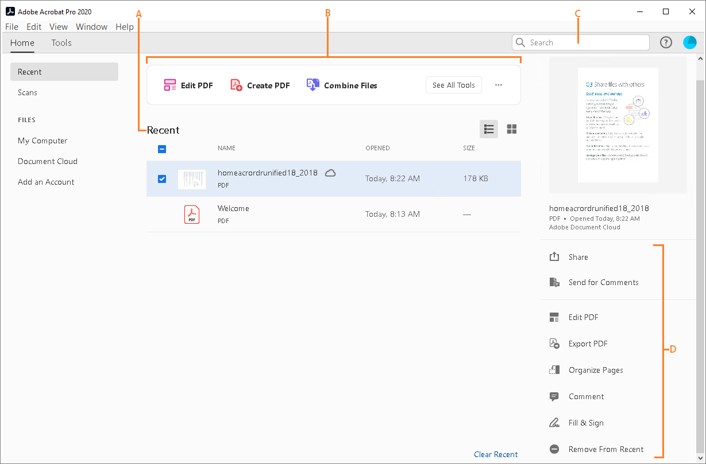
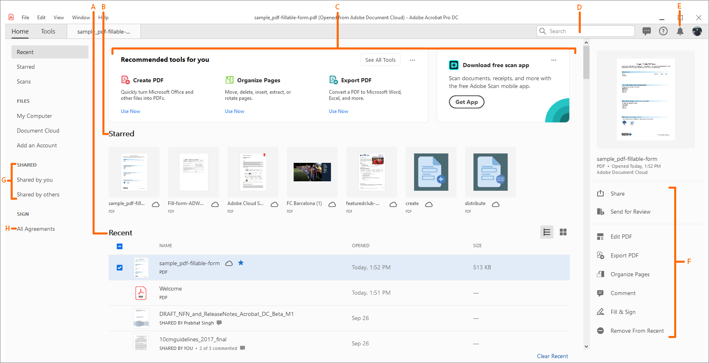

| |
ACROBAT PRO |
Adobe Acrobat é um software desenvolvido pela Adobe, que permite a conversão de documentos de diversos formatos em um arquivo de formato PDF.
|  | O Software Adobe Acrobat proporciona a capacidade de converter o documento de maneira fiel ao original independente do seu conteúdo. |
| O Adobe Acrobat inclui produtos para desktop, aplicativos gratuitos para dispositivos móveis e serviços online disponibilizados por meio da Adobe Cloud. |  |
|  | É possível adquirir o aplicativo no site oficial: Adobe.com, por R$ 86,00/mês; R$ 1.032,00/ano; R$ 124,00/mês. |
| Com a versão de março de 2023 do Adobe Acrobat e do Acrobat Reader, a versão do software será atualizada de 22. xx para 23. |  |
|  |  |  |